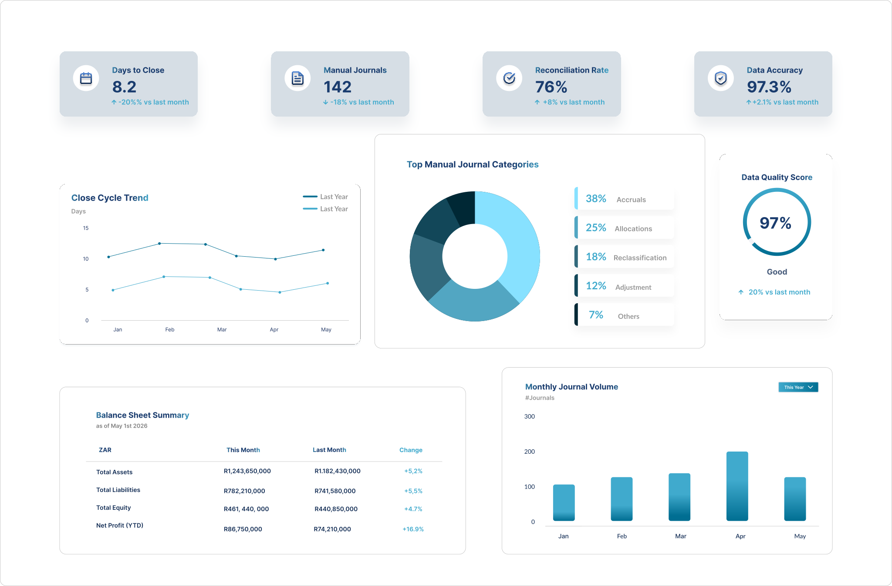
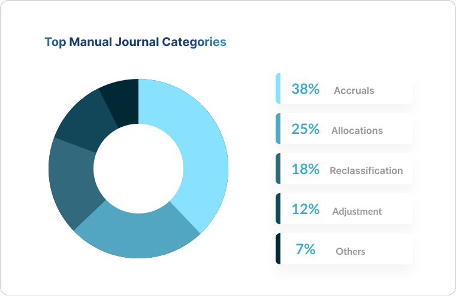
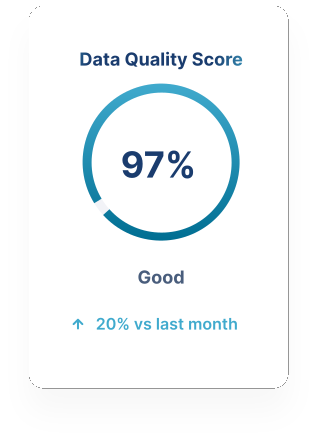
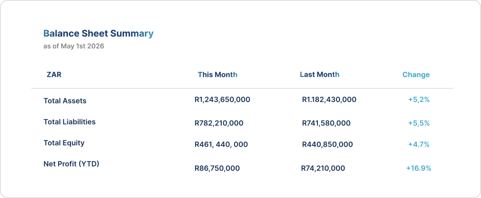

Current State Assessment
A structured view of your existing finance environment and key pain points.
A structured diagnostic designed to identify inefficiencies, manual workarounds, reporting gaps, and optimisation opportunities within your SAP finance environment.

Over time, finance environments become fragmented by manual workarounds, inconsistent processes, reporting gaps, and underutilised functionality.
Many organisations accept these inefficiencies as normal-even though they directly impact performance, visibility, and decision-making.
Manual dependencies and process bottlenecks delay reporting.
Finance teams rely on spreadsheets and repeated interventions.
Reporting structures do not provide timely operational insight.
Existing SAP functionality is not being fully leveraged.


The Financial Health Check is a structured assessment of your SAP finance environment designed to identify inefficiencies, quantify impact areas, and prioritise optimisation opportunities.
Book a Financial Health CheckOur focus is not just technical configuration-but how the finance environment performs operationally.
A structured view of your existing finance environment and key pain points.
Clear identification of bottlenecks, manual effort, and operational risk areas.
Visibility into where inefficiencies affect time, reporting quality, and control.
Recommended quick wins and strategic improvement opportunities.
Investment depends on organisational size, finance complexity, and scope of assessment.
This is not a generic audit or support engagement.
The Financial Health Check is a structured optimisation assessment focused on identifying measurable business improvement opportunities.

Start with a structured discussion to determine whether a Financial Health Check is the right first step.
Book a Financial Health Check